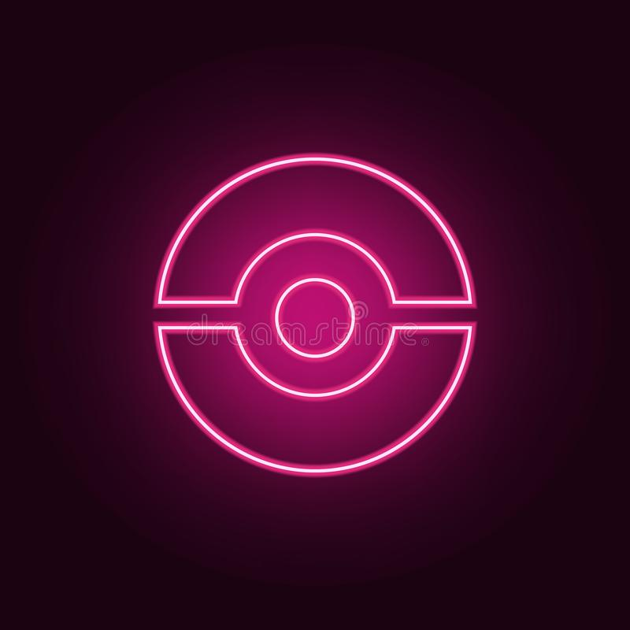

<mat-toolbar color="primary">
    <mat-toolbar-row>
      
      <span>Pokedex</span>
      <span class="large-spacer"></span>
      <button mat-icon-button class="login" (click)="login()">
        <span>Login</span>
      </button>
      <span class="little-spacer"></span>
      <button mat-icon-button class="about" (click)="about()">
        <span>About</span>
      </button>
    </mat-toolbar-row>
</mat-toolbar>